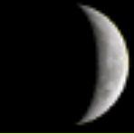
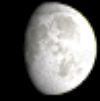
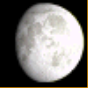

Para la pesca de la trucha es necesario tener en cuenta las etapas Lunares:
| día 1 | día 2 | día 3 | día 4 | día 5 | día 6 | día 7 |
|---|---|---|---|---|---|---|

1º día luna Nueva Bueno por la noche |
2º día luna Nueva Bueno por la noche |

3º día luna Nueva Bueno por la tarde y por la noche |
4º día luna Nueva Muy bueno hasta medio día |

5º día luna Nueva Muy bueno hasta media tarde |

6º día luna Nueva Muy bueno hasta media tarde |

7º día luna Nueva Condiciones perfectas por la mañana |
|
1º día luna Creciente Bueno a la mañana |
2º día luna Creciente Bueno a la mañana y muy bueno a la tarde |
3º día luna Creciente Regular durante todo el día |

4º día luna Creciente Regular durante todo el día |

5º día luna Creciente Regular durante todo el día |
6º día luna Creciente Condiciones perfectas de media tarde a la noche |
7º día luna Creciente Condiciones perfectas todo el día |
|
1º día luna Llena Regular durante todo el día |
2º día luna Llena Malo durante todo el día |
3º día luna Llena Muy malo durante todo el día |
4º día luna Llena Bueno todo el día |
5º día luna Llena Bueno por la mañana |
6º día luna Llena Bueno por la mañana y regular por la tarde |
7º día luna Llena Bueno hasta medio día |
|
1º día luna Menguante Bueno hasta medio día |
2º día luna Menguante Regular por la tarde |
3º día luna Menguante Regular por la tarde |
4º día luna Menguante Regular por la tarde |
5º día luna Menguante Bueno hasta medio día |
6º día luna Menguante Condiciones perfectas al medio día y por la tarde |
7º día luna Menguante Condiciones perfectas al medio día y por la tarde |
A parte de las etapas Lunares también está clara la influencia climatológica en los hábitos alimenticios de la trucha. Los más importantes son el viento, la temperatura del agua y el caudal del río.
Otro factor a tener en cuenta es la época del año. La actividad de la trucha es mayor en verano que en invierno.